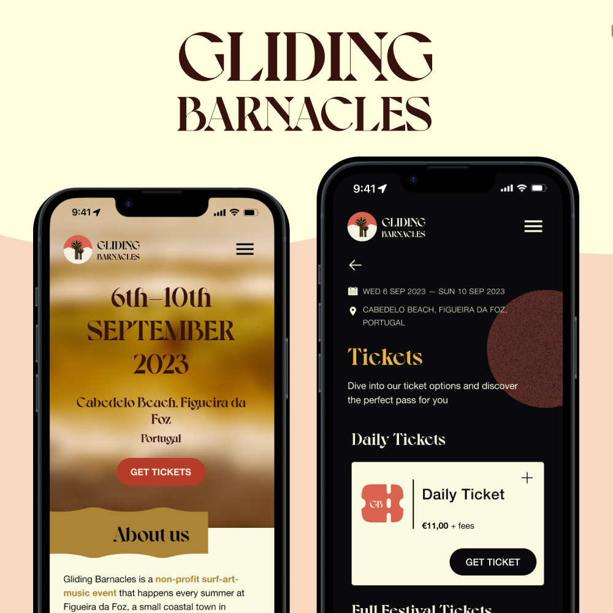
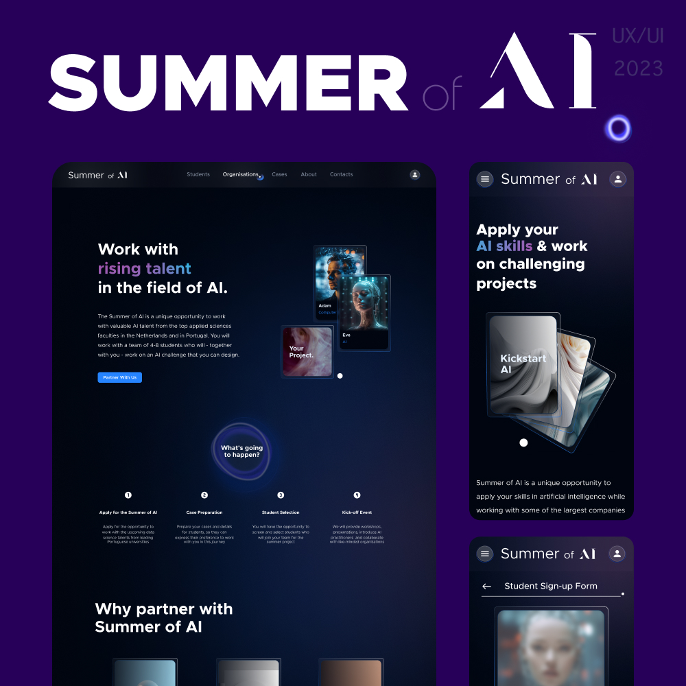
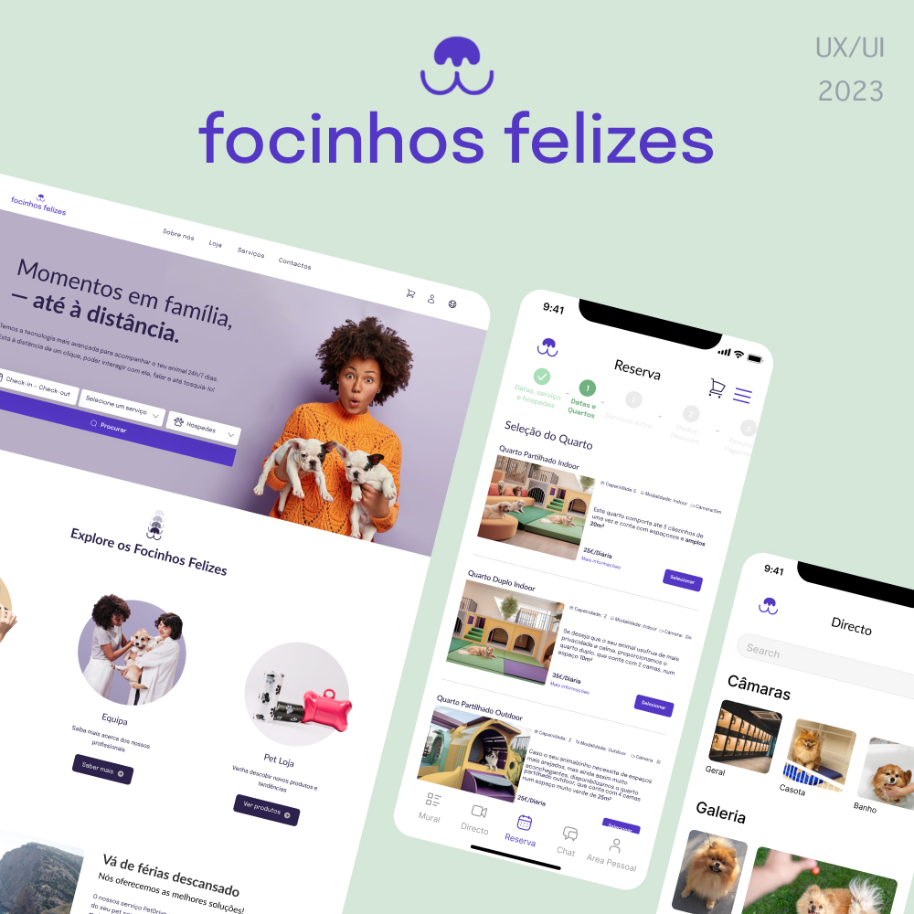

PRODUCT DESIGN | RESPONSIVE
Gliding Barnacles is an independent portuguese music and arts festival that counts on no official website
UX/UI DESIGN | RESPONSIVE
A futuristic website with dashboards and forms to manage applications to an artificial intelligence related event.
PRODUCT DESIGN | MOBILE APP/WEBSITE
A website and mobile app that allows pet owners to book pet services and check surveillance cameras of a pet hotel while their buddies stay there.
